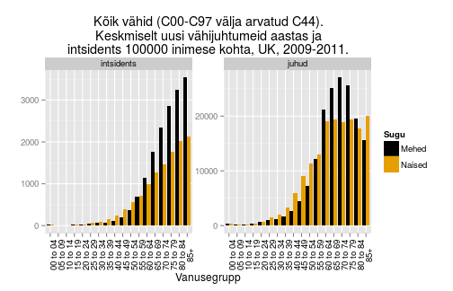
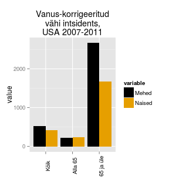
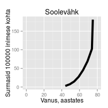

Vähi geneetilised alused
Taavi Päll
vanemteadur, VTAK
Vähk kui haigus
Vähk
- Mõiste vähk (tuumor, pahaloomuline kasvaja, neoplasm) tähistab suurt hulka erinevaid haiguseid (NCI ~160 olulisemat) mis võivad tekkida kõigis keha kudedes.
- Vähi tunnuseks on ebanormaalsete rakkude kasv väljapoole nende normaalseid koe piire. Kõrvalolevate kudede invasioon ja levik teistesse organitesse ehk metastaseerumine.
- Metastaasid on ka enamuse kasvajatest tingitud surmade põhjustajaks.
WHO andmetel
- Vähkkasvajad on maailmas üks juhtivatest surma põhjustatavatest haigustest, nõudes 8.2 miljonit elu 2012. a (EU-27 osakaal 2012: 1.27 miljonit (15%))
- Kopsu-, maksa-, mao-, kolorektaal- ja rinnakasvajad põhjustavad enim vähisurmasid
- Sagedasemad vähitüübid on naistel ja meestel erinevad
Vähi kolm peamist väljakutset maailmas
- ~30% vähisurmadest on tingitud viiest käitumis- ja dieediriskist:
- kõrge kehamassiindeks,
- vähe puu- ja aedvilju menüüs,
- vähene füüsiline aktiivsus,
- tubakas/suitsetamine,
- alkohol
- arengumaades põhjustavad 20% vähkidest hepatiidi viirused B ja C ning papilloomiviirused
- ennustatakse, et haigestumus suureneb maailmas 14 miljonilt 2012.a 22 miljonini 2030-ndatel
Kõige sagedasemad surmaga lõppevad vähid maailmas, 2012 aasta seis:
- kops (1.59 miljonit surma)
- maks (745 000)
- magu (723 000 deaths)
- kolorektaal (694 000)
- rinnavähk (521 000)
- söögitoru (400 000)
Erinevused 5-aasta elulemuses maailmas

Kasvajatesse haigestumus Eestis

Sagedasemad paikmed Eestis

Vähitüübid
Kliiniliselt võib kasvajad jaotada kaheks
- healoomulised (lokaliseerunud, mitteinvasiivsed)
- pahaloomulised (invasiivsed, metastaatilised)
Metastaasid ehk vähi siirded vastutavad lõviosa kasvajatest tingitud surmade eest!

Neli põhilist vähitüüpi
| Epiteliaalsed | Mitte-epiteliaalsed |
|---|---|
| kartsinoomid (carcinoma) | sarkoomid (sarcoma) |
| hematopoieetilised | |
| neuroektodermaaltuumorid |
- Kartsinoomid vastutavad 80% vähisurmade eest
Vähiteke
Vähiteke on pikajaline protsess
- USA andmete põhjal on 70 a. mehel 1000 korda kõrgem risk surra käärsoole vähki kui 10 a. poisil.
- Sporaadiline vähk on vana ea haigus ja sellest lähtuvalt võtab pahaloomulise vähi teke ilmselt aega kümneid aastaid.


Tee vähini võtab tavaliselt palju aega
- Soolevähi intsidents tõuseb tugevalt seitsmendal ja kaheksandal eludekaadil.
- Seega, iga samm või sündmus vähi suunas toimub kord 5 kuni 10 aasta jooksul.
- Kogu protsess võtab aega 20 kuni 40 aastat.
- Siit nähtub, et koos vanusega tekib meisse kõigisse paratamatult ka rakke, mis on juba läbinud mingi arvu (kuid mitte kõiki!) vähi tekkeni viivaid astmeid.

Osa vähke ei sõltu vanusest
- Inimse mesotelioomide (vasakul, tekib asbesti sisse hingamisel ja suitsetamisest) ja hiire nahavähi (benzo[a]püreeniga naha värvimisel) epidemioloogiline analüüs näitab, et välised kantserogeenid on võimelised vähki indutseerima kindla ajakava alusel.
- Ka kopsuvähi intsidents sõltub pigem suitsetamise staazist kui vanusest ja suitsetamise maha jätmisel risk enam ei suurene.

Vähitekke pikaajalisus: suitsetamise mõju kopsuvähi levikule USA-s

- Kuni II maailmasõjani oli suitsetamine USA meeste seas vähelevinud.
- 30-35 aastat hiljem, 1970ndate aastate paiku, hakkas kopsuvähi intsidents järsult tõusma.
- Praegu on ülemaailmne kopsuvähi suremus ~1.39 miljonit aastas, tipp peaks saabuma 2020-30-ndtate aastate paiku.

Mis tekitab vähki? Kartsinogeenid!
Kartsinogeenid toimivad mutageenidena ja nende toime-mehhanismiks on raku kasvukontrolli geenide muteerimine onkogeenideks.
\[\color{green}{normaalne\; kasvu kontrolli\; geen} \quad \underrightarrow{\times\; \color{red}{mutageen}} \quad \color{yellow}{onkogeen} \]

Keemilised kartsinogeenid

Katsusaburō Yamagiwa
- 1915. aastal demonstreeris pigi kartsinogeense toime
- pintseldas küüliku kõrvu igapäevaselt pigiga,
- mitu kuud hiljem moodustus lamerakuline kartsinoom.
Näitas, et kasvajaid on võimalik esile kutsuda

Kartsinogeenid toimivad mutageenidena
Füüsilise või keemilise katserogeeni poolt transformeerunud rakud kannavad muteerunud geene - onkogeene - , mis rikuvad normaalse kasvukontrolli.
Tumorigenees
- Pahaloomulise vähi teke on pikaajaline protsess, mis tavaliselt võtab aega aastakümneid.
- Kasvaja progressioon põhineb rakkudes akumuleeruvatel juhuslikel geneetilistel või epigeneetilistel mutatsioonidel rakkude jagunemist ja ellujäämist reguleerivates geenides.
- Mutatsioonid, mis annavad tulevasele vähirakule selektiivse eelise nimetatakse juht- või draivermutatsioonideks (driver).

Kasvaja klonaalsus: mono- või polüklonaalne
Epigeneetika viitab monoklonaalsele päritolule
R. Weinberg et. al analüüsisid leiomüoome, 1965. a
- X-kromosoomi inaktivatsioon on juhuslik
- 30% Aafrika päritolu naistel on polümorfsm G6PD geenis (asub X-kromosoomis)
- heterosügootidel esines leiomüoomis ainult ühte geeni versiooni
Kasvaja klonaalsus - müeloomid
- Müeloomid pärinevad B-rakkude eellastest, antikehi tootvatest plasmarakkudest
- Iga antikeha toodab üks kloon
- Igal patsiendil toodab müeloom vaid ühte antikeha
Kasvaja evolutsioon: klonaalne ekspansioon
- Vähi progressiooni iseloomustab geneetilise või epigeneetilise klooni ekspansioon
- Kas see on juhuslik või omab selline kloon mingit selektiivset eelist?
- Klonaalne ekspansioon on sageli seotud p53 või p16 tuumorsupressor geeni kadumisega
- Vähi progressioon sisaldab järjestikuseid kloonide paljunemiseid.